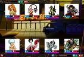

Urban Rivals
 De: La Frikipedia, la enciclopedia extremadamente seria.
De: La Frikipedia, la enciclopedia extremadamente seria.
De la serie Videojuegos:
Urban Rivals

Sangr, algo tipico en este juego
| Desarrollado por:
|
Un francés
|
| Distribuido por:
|
Ese mismo franciense
|
| Diseñado por:
|
{{{diseñador}}}
|
| Motor
|
Ordenata y cartas a lo Yu Gi Oh
|
| Género(s)
|
cartas.
|
| Fecha de lanzamiento:
|
Solo te puedo decir que llegó muy lejos.
|
| Modos de juego:
|
Modo Noob y el popular modo ELO (Extreñidos Loros Ortopédicos)
|
| Requisitos:
|
Tener poca vida social y no aburrirse de jugar una y otra vez a las mismas cartas.
|
| Disponible en:
|
PC u IPhone Hipster
|
| Formatos:
|
Wordart
|
| Edades:
|
Hay dos tipos de jugadores. Los enanos de 10-11 fáciles de ganar, y los señores mayores que te dejan p'al arrastre
|
| Puntuaciones:
|
Hay tetas abundantes (incluso un clan solo de tetas) así que 8
|
Steven Seagal aprueba este juego.
Urban Rivals es un juego de cartas multijugador que trata de personajes creados por un francés drogado en una tarde de otoño. La trama se desarrolla en una ciudad llamada Clint City, donde viven grupos sociales como hipsters y canis y se pelean entre ellos y la policía que siempre les da para el culete y encima de ellos la mafia rusa que les estira a todos de los calzoncillos, y los otros clanes juergueros que solo están para ocupar espacio en el peculiar videojuego, como un grupo de feminazis o frikis que les gusta el Star Drej(no podían haber pocos clanes),como da flojera mencionarlos todos, puedes visitar la web [1] aqui.
Trama del Juego
la mas puta personaje del juego, se llama...(te interesa su nombre?)
 Parece mentira que este juego te enseñe a improvisar.
Cuando llegas, te dan 8 personajes chorras del juego. Ese "deck" es el que utilizas para empezar a pelearte contra otra gente en combates de 12 vidas y 12 pastillas, estrujandote el cerebro a más no poder para perder con dignidad. Con sangre, sudor y lagrimas consigues algo más de pasta, que utilizas para sustituir esa porquería de presonajes que tienes por otros algo más dignos. Los personajes NO SON REALES, aunque bien es cierto que algunos estan inspirados en personas de series, películas e incluso personajes historicos.
Características

Yamcha también es una carta de Urban Rivals, ¿No lo sabias?
Las cartas tienen en total 5 caracteristicas:
- poder: es el potencial ofensivo de la carta, a mas poder mejor es la carta y mas dificil es de vencer. Una carta puede tener de 1 a 8 puntos de poder. El poder se multiplica con unas pastillas
drogas denominadas pillz que dan en el combate. Normalmente, todo el mundo tiene cartas de poder máximo menos tú, y para ganar un simple round tienes que tomar esteroides de esos a porrillo.
- daños: son las vidas que quita la carta si gana. Los daños máximos tambien son 8. Como antes hemos dicho, empiezas con 12 vidas, con lo que no siempre se gana por KO, sino que tienes que quitar más puntos que el contrario.
- habilidad: es el poder que desarrolla esa carta,las habilidades pueden ser puras (se pueden usar en cualquier momento del juego) o con valor (solo se activan cuando la carta que posee esa habilidad sale primero).hay muchas habilidades y muy variadas.reductores o aumentadores de daños,poder,ataque,pillz.tambien hay cartas que recuperan vida,ya sea por daños o solo ganando (por daños es,si inflinges 2 daños con una carta que te da 1 vida por daño,te dara 2 vidas extra (se empieza con 12 vidas,recuerdo)si son 2 vidas por daño,se te suman 4 vidas,y asi sucesivamente).luego estan las cartas con veneno que te quitan vida por ronda (si te gana una carta con veneno 1 min 1,perderas 1 de vida cada ronda hasta llegar a 1,independientemente de que te ganen otras cartas o ganes tu. Las habilidades mas interesantes son los stops,que te evitan habilidades que te puedan hacer perder la ronda o peor,la partida (stop habilidad) mientras que los stop bonus bloquean el bonus de las cartas (que describiremos mas adelante) que a veces puede ser peor y mas peligroso que la habilidad.
- bonus: es una propiedad que se activa cuando se juntan 2 personajes de un mismo clan.es mas dificil de parar que la habilidad,y algunos bonus,como uppers o rescue,son muy dificiles de superar.
Las cartas empiezan siempre con 1 nivel (1 estrella) y segun el numero de estrellas totales se
puede calcular la calidad de las cartas,aunque hay excepciones. Las cartas se dividen en 3 clases
(estas clases vienen indicadas en la barra del nombre de la carta) :
- cartas raras: se distinguen por ser de oro,generalmente suelen ser las cartas mejores y mas escasas de los clanes (quiere decir que o por su precio o escasez,las tiene poca gente).
- cartas inusuales: las de plata. Son las que tambien suelen ser poco vistas,pero mas accesibles que las raras,ya sea por precio o por cantidad de ventas.
- cartas comunes: son las que suele tener todo el mundo,su precio suele ser bastante bajo,y a veces son tambien debiles,pero como todo,hay excepciones.
ahora describiremos los niveles (estrellas):
- 2 estrellas: generalmente son cartas debiles y con poco poder o daños.sus parametros mas habituales son 6/2,6/3 y 7/2.segun su habilidad o bonus pueden ser buenas o malas.hay algunas que son 8/2 pero son muy raras y caras.
- 3 estrellas: cartas intermedias con unos parametros variables,ya que a veces son parametros de 2* con habilidad muy potente.suelen ser 6/4,7/3 y 7/4.son las mas habituales para hacer un buen deck.algunas hay que son 8/4 el maximo,muy caras generalmente.si tienen habilidad pueden ser prohibidas en ELO.
- 4 estrellas: cartas potentes por lo general,no es raro ver poder o daños casi maximos,sin embargo los parametros mas comunes son 6/5 6/6 y 7/5,hay excepciones,que son cartas prohibidas en ELO,como 7/6,8/5 u 8/6 ,parametros de 5 niveles,no de 4. a veces hay cartas 8/4 que serian excesivas con 3 estrellas,y les suben una...
Mahou 5 estrellas: las mejores en teoria,algunas lo son tanto que con bonus o habilidad (o ambas) y furia (boton que añade 2 daños a cambio de 3 pillz) pueden matar en 1 golpe (efectuar 12 daños).sus parametros mas habituales son 7/6,7/7 y 8/5.existe un grupo de cartas muy poderosas llamadas Supercartas que pueden ser 7/8 (prevalecen los daños), 8/7 (prevalece el poder) o las perfectas 8/8 (solo hay 2 en el juego,y poseen un coste elevadisimo).no obstante hay bastantes cartas que con bonus o habilidad pueden llegar a un 8/8 virtual.
Clanes del Juego
bajo esta imagen se defienden los
desgracios esos deportistas
Pobre diablo. Va a perder y de qué manera.
Son los nombres que se han puesto los personajes para diferenciarse del resto. Tenemos a los siguientes:
- All Stars Son deportistas mosqueados porque utilizan de botellódromo el único polideportivo de la ciudad. En vez de poner una queja al ayuntamiento, o cualquier otra medida más civilizada, deciden salir con bates y palos de golf a dar ostias.
- Bangers. Así se llama la típica banda que aquí podemos encontrar de canis y gitanos, que como no, por influencia americana, son casi todos negratas. Son liderados por Eminem y El Porta. Aparecen en <<Scary Movie 3>> protagonizando un tiroteo, y además tienen un programa en la MTV llamado <<Tunea mi coche>>.
- Fang Pi Clang. Son los karatekas de la ciudad. Bajo las ordenes de
Naruto Lost Hog y Kinjo y Liu Kang, estan creando en secreto al clon de Bruce Lee para lograr dominar al mundo y lograr vencer al jefe, aunque ellos digan que es para instaurar la disciplina del kung fu dorado.
Frikis Freaks. Son las personas que son fenómenos, o mas bien, los fenomenos que dicen ser personas, el circo en estado puro: trapecistas,domadores,payasos y artistas y el orgullo gay. Todos siempre a las ordenes del dueño del circo Boris.GAYS G.H.E.I.S.T. Comunistas nazis, o algo por el estilo.Los miembros de una organizacion terrorista, son parecidos al Umbrella del Resident Evil y son liderados por un gay emoidealista que quiere ser el amo del mundo haciendo todas las personas felices a su mando(ya sea de un modo, o de otro, ustedes saben a que me refiero). Este ser recibe el nombre de Sigmund Gheisht,y es el creador del clan que lleva su nombre. Les encanta esconderse en sótanos, garajes y hangares abandonados para bailar Y.M.C.A. para maquinar aviesos planes para dominar el mundo sin que los Sentinel se unan al bailoteo les arresten.- Junkz. Son los foll
adoresoneros de la ciudad,siempre dispuestos a saltarse las reglas,estos amantes de ritmos ultrarrapidos y enemigos del polit son comandados por el gran Dj Korr,el peor mejor dj de todo Clint City, ellos son esos tipicos seres que creen que Dios es como lo describe los Simpson, y no como lo explica nuestra enciclopedia extremadamente seria.
- Jungo. Animales que despues de una grandisima borrachera, acabaron actuando igual que humanos, pero desgraciadamente no escogieron lo bueno(como irse de parranda, no estudiar y cosas por el estilo) y decidieron hacer lo peor que puede hacer un humano(leer, estudiar, hacer caso a sus padres). Liderados por Ongh, quieren
copular como conejos que les den de comer en los zoologicos.
- La Junta. Guerreros,mercenarios y cosas similares. La junta no se anda con rodeos a la hora de imponerse,y estan dispuestos a destruir a aquellos que se interpongan en su camino. Comandados por el General, la junta tiene la intencion de tomar el poder y deshacerse del polit "esos cretinos que prohibieron el consumo de marihuana". Cuando el General está ausente, las tropas de La Junta son comandadas por Bryan, un escocés boina verde con una gaita lanzallamas ( y luego decía Willy que los escoceses no son pendencieros...).
- Leader. Son los personajes mas respetados del mundo y los mas alabados, es decir, son los mas forzudos y tocapelotas en todo el juego. Bueno, en realidad todos ellos no son más que lo que obtendríamos si fusionásemos un pequeño tallarín de Monesvol con el pelo púbico de Chuck Norris. El resultado son estos 10
gallinas mandamases que en cada nivel tienen peor carácter y mas parecido a un maldito bastardo. Pero al final solo sirven de completo en tu colección. Estos son los fantoches que vas recolectando en cada nivel:
- Timber:
hermano de chuk norris leñador canadiense que pega más fuerte con los puños que con el hacha. Se va pokemonizando en cada nivel.
- Vansaar: general que parece un gafotas histérico en el primer nivel.
- Hugo: tio dopado con esteroides masoquista al que le gusta que lo metan en la cárcel.
- Bridget: enfermera que se hace la cirugía estética en cada evolución.
- Ashigaru: es samurai metrosexual que además </
papá de Ichigo que te enseña el camino de la fuerza.
- Erik (o algo así):
EMO justiciero, le gusta ir de tejado en tejado, como su personaje favorito de videojuegos.
Aramís Fuster Ambre: gitana de feria que lee la bola de cristal.- Eklore: mitad planta, mitad humana. Una drogaadicta de cuidao, al criarse en una plantación de maría te puede robar una pastilla por turno.
Eddie Murphy Morphum: camello que te da una pastilla por turno, en cada nivel mas pelotudo.- Volt:
Corredor mas veloz que un pedo androide del exterior que baila robocó y que solo tiene cojones agallas en el primer nivel.
- Monta
ñana. Mandamases del crimen organizado,asesinos profesionales y extorsionadores letales,a la mafia del urban no le da miedo nada ni nadie,tienen suficiente poder e influencias para eliminar a cualquiera de sus enemigos. Siempre toda La Familia esta bajo la proteccion del capo, Don.
- Nightmare. Las criaturas de la noche,zombies,vampiros,demonios,
emos y demas seres sobrenaturales. A las ordenes de Ielena,los nightmare pretenden que la ciudad sea su cementerio.
- Pirañas Los piratas de la ciudad,aguerridos rudos y descarados,fueron los ultimos en llegar pero no parece que quieran marcharse
porque como piratas no tienen futuro. Bajo las ordenes del capitan Bloodh los pirañas consiguen todos sus objetivos.
- Pussycats. Un grupo de feministas y de amazonas que si traducimos el nombre del clan nos salen las CoñoGatas, es un grupo de rameras que alguna vez en la vida estas desdichadas quieren llegar a ser como nosotros los hombres (
Mujeres tenían que ser). Se reunen entre ellas en una especie de panteón en el que montan juergas y de tanta borrachera limpia ellas acaban siendo lesbianas, pero estas se han revolucionado,y estas "gatitas" estan dispuestas a sacar las uñas. La directora del clan es una tal Charlie, que es una Stripper, que en 2 evoluciones protagoniza el cosplay de la Beatrix Kiddo de la peli de Kill Bill.
- Rescue. Son los equipos de salvamento liderados por Kerry, la SOS de la ciudad, que cogen rapidamente el
Batmovil coche y van al rescate estos valientes intentan devolver la cordura y el bienestar a la ciudad, aunque les llevarán lustros. Atacan a la gente tirándoles botiquines a la cara.
- Roots. Son los hippies y paletos y mendigos, avergonzados de la crueldad humana y los poderosos sin corazon,viven en las afueras de la ciudad y estas buenas gentes luchan por el derecho a la existencia de los seres vivos. Kiki,un orangutan que rescataron de un laboratorio les alienta y les da fuerzas para seguir luchando. Chewbacca es un fiel seguidor de este movimiento pacifista y ecologista.
-
Subnormal Sakhrom. Son los extraterrestres, o lo fingen ser, pero son Star Drej del que vienen a la tierra en misiones interestelares,pero no tolerarán a nadie que los discrimine, (¿Entonces porque van a la tierra?). Echan de menos su caaasa y les gustaría que alguien les prestase un teléééééfono para llamar a su caaaasa. El lider del grupito es un frikazo que lleva puesto una bolsa en la cabeza.
- Sentinel. Son los polis de la ciudad, pero en cuanto te giras estos tíos resultan ser unos polis corruptos, (En esta ciudad últimamente no hay nada normal.) estan para poner el orden al mando del comisario Copper.
- Skeelz
Catz, Dogz, Tigerz, Mierdaz Son un grupo de niños superdotados (no seáis malpensados, eeeh?) que van a una especie de Joguarts. Seré sincero: Nisiquiera tienen padres y lo que se dice un colegio, es un orfanato especial para los niñatos psicodelicos. Son como son unos noobs lloricas que no tienen ni pajolera idea, siempre usan chuletas en sus exámenes y siempre son unos malditos pelotas, en primer nivel tienen el típico pijamica blanco que es el supuesto uniforme del colegio que les hace parecer aún mas mariquitas e insolentes, pero en ultima son unos cabrones que en cualquier momento te pueden hacer el calzón chino; han convencido a sus profes y tutores para cozearse y dar palos a todos los clanes que creen que son inferiores, (Teóricamente los son.)y además,nadie saca notas tan buenas como ellos. El viejo sabio es Caelus, que es el supuesto clon de Dambeldor.
- Ulu Watu. Los surfistas que no quieren que el mundo se acabe solo para poder surfear. Su jefe es un moai con un cubo en el culo y un tanga en la cabeza (¿o era al revés?).
- Uppers. Son los poderosos,los adinerados,los que manejan la economia de la ciudad. Arrogantes,descarados y avariciosos, muchos de las ricas se ganan el dinero en prostibulos,los Uppers no soportan a los sintecho y esperan que el polit tome medidas contra ellos. Sus líderes son Bill Gates y Paris Hilton.
- Vortex Son una panda de viajeros del tiempo que son creyentes en la religión del Cyberjesús. que son precendetes del mundo de Futurama, que vienen de muchos anios alante
para violar destruir a los clanes de Clintz City, nisiquiera justifican la razón de por qué lo hacén,suelen estar a ordenes al grandísimo poseedor del orgullo friki del futuro: Dregn.
Tipos de personajes

Esta carta es tan invencible que se cree no existe. Cuesta infinitos clintz, y se cree tambien que sólo hay una en el juego, y la tiene Chuck Norris.
En esta sección explicare brevemente como se dividen los personajes:
En primer lugar tenemos dos principales clasificaciones:
- Por su tipo de pelea:
- Buenos. Son los mas buscados, suelen ser con mucho poder y/o daños.
- Medianamente Buenos. Son buenos, pero tienen alguna que otra debilidad,aunque suelen ser buenos si se saben utilizar.
- Malos. Las cartas que normalmente no tienen habilidad y ademas tienen poco poder y daños.
- Por su costo:
- Caros. Son contados, generalmente son del tipo buenos. aunque hay excepciones,como pasa con los Collector.
- Medianamente Caros. Son la mitad de todas las cartas, esas la mayoria son buenas, las tienen los casi exprimentados, y algunos que no lo son tanto.
- Baratos. Esas las tienen casi todos los jugadores, normalmente suelen ser medio buenas o malas,aunque hay veces que hay buenas o muy buenas,baratas.son las denominadas "infravaloradas".Son tan malas que solo sirven para limpiarte el culo.
En segundo lugar hay un grupo de cartas llamadas Collectors (Cr). Como su nombre indica, solo existen para coleccionar, son muy, muy, muy caros,debido a que son muy escasos (rara vez hay mas de 20). Estos a su vez se dividen en:
- Buenos. Estas cartas son con las que te metes un extasis al jugar porque ves que siempre ganas...o casi siempre.la mejor carta del juego es cr,es
Dj Korr Cr Chuck Norris,un 99/99 (todo perfecto) que ademas se suma daños.ademas su bonus le añade ataque, y ni siquiera es collector, deseas algo mas?.
- Malos. Estas cartas son caras porque nadie las compra y nadie las quiere, hay que ser honestos. La peor carta de este juego tambien es Cr,es Flavio Cr,un deprimente 1/8 sin habilidad ni bonus que sirva para algo (su bonus solo añade daños,por lo que llega con furia a 12 daños,pero 1 de poder no sirve
y a mi què?).
|
|
 Shooter Shooter
 Terror Terror
 Velocidad Velocidad
 Rol Rol
 Estrategia Estrategia
 Aventuras Aventuras
 Fight! Fight!
 Clásicos Clásicos
 Deportivos Deportivos
 Aventura gráfica Aventura gráfica
 Novela visual Novela visual
 Personajes de videojuegos Personajes de videojuegos
|
Autor(es):
- Azulejos
- ElInventor
- El Sevillano
- Many20
- Belliard
- Cuatenos
- ArreKarallo
- Veni Vidi Vici
- Dmptuning
- Dark temptation
Frikipedia 2005-2016, Licencia
GFDL 1.2 - Extraído por FrikiLeaks